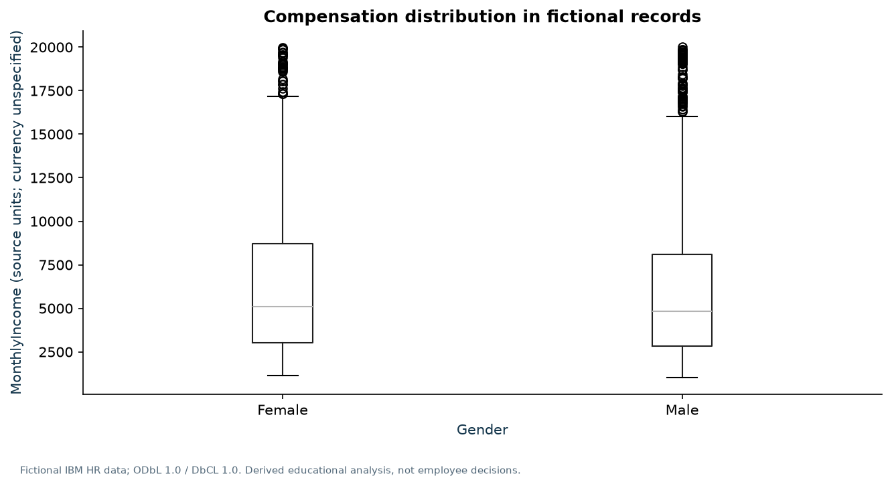
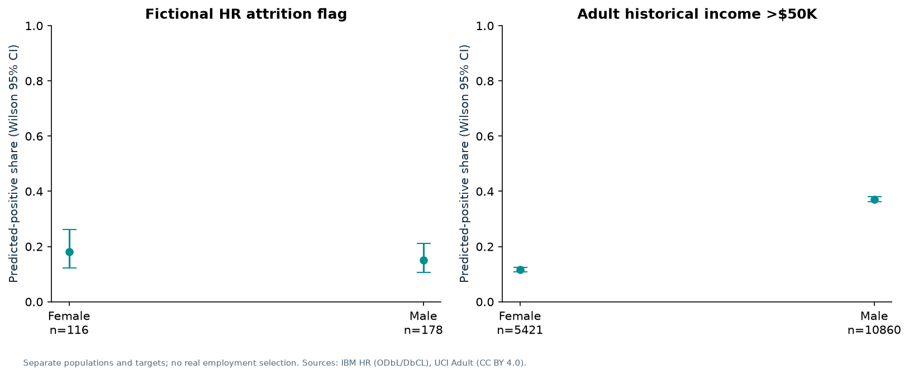

Attrition label share
16.1%
Role concentration
SIMULATED source records; DERIVED shares. No annual attrition period is available.
| Job role | Records | Attrition Yes | Share |
|---|
| Sales Representative | 83 | 33 | 39.8% |
| Laboratory Technician | 259 | 62 | 23.9% |
| Human Resources | 52 | 12 | 23.1% |
| Sales Executive | 326 | 57 | 17.5% |
| Research Scientist | 292 | 47 | 16.1% |
| Manufacturing Director | 145 | 10 | 6.9% |
| Healthcare Representative | 131 | 9 | 6.9% |
| Manager | 102 | 5 | 4.9% |
| Research Director | 80 | 2 | 2.5% |
Compensation and workload investigation
Income currency is unspecified. Observed disparity is an association requiring further investigation; it does not establish discrimination.

Independent target audits
Adult positive means historical income above $50K. HR positive means attrition label. Neither is an actual hiring selection.

Audit definitions and support counts
External context / BLS January 2026
Median employer tenure: 4.1 years overall; 4.3 men; 4.0 women. Different population and period; no company performance comparison.
BLS source